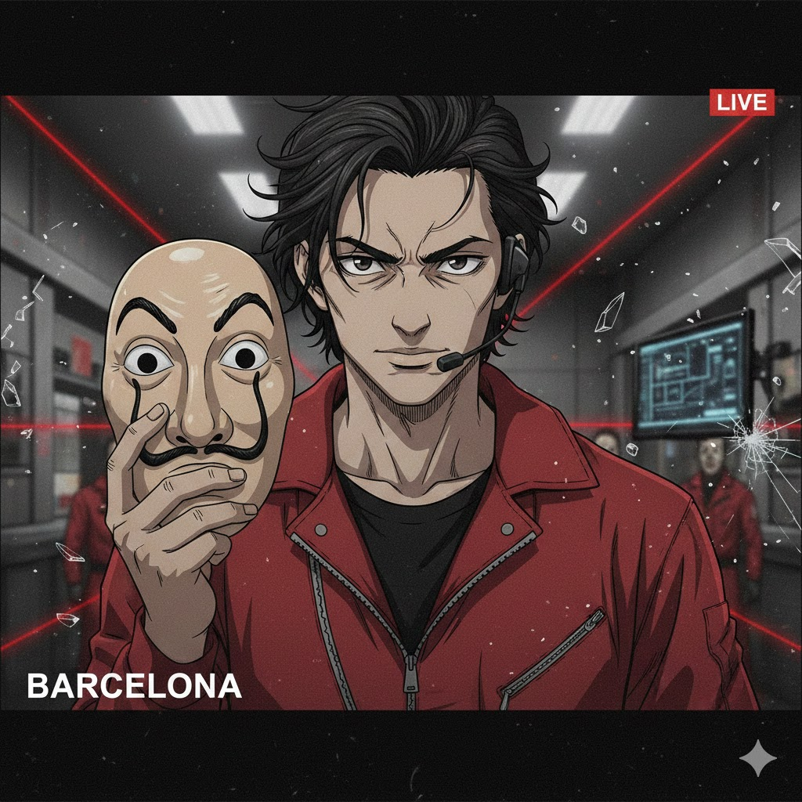

<!DOCTYPE html>
<html lang="ca">

<head>
    <meta charset="UTF-8">
    <meta name="viewport" content="width=device-width, initial-scale=1.0">
    <title>THE MASTER PLAN (EL PROFESSOR)</title>
    <script src="https://cdn.tailwindcss.com"></script>
    <script src="https://unpkg.com/react@18/umd/react.development.js"></script>
    <script src="https://unpkg.com/react-dom@18/umd/react-dom.development.js"></script>
    <script src="https://unpkg.com/@babel/standalone/babel.min.js"></script>
    <link href="https://fonts.googleapis.com/css2?family=Bebas+Neue&family=Roboto:wght@400;700&display=swap"
        rel="stylesheet">
    <style>
        body {
            font-family: 'Roboto', sans-serif;
        }

        .font-impact {
            font-family: 'Bebas Neue', cursice;
        }

        .red-alarm {
            animation: alarm 1s infinite;
        }

        @keyframes alarm {
            0% {
                background-color: #000;
            }

            50% {
                background-color: #500;
            }

            100% {
                background-color: #000;
            }
        }

        @keyframes blink {

            0%,
            100% {
                opacity: 1;
            }

            50% {
                opacity: 0;
            }
        }

        .animate-blink {
            animation: blink 1s step-end infinite;
        }

        @keyframes shake-hard {
            0% {
                transform: translate(1px, 1px) rotate(0deg);
            }

            10% {
                transform: translate(-3px, -2px) rotate(-1deg);
            }

            20% {
                transform: translate(-3px, 0px) rotate(1deg);
            }

            30% {
                transform: translate(3px, 2px) rotate(0deg);
            }

            40% {
                transform: translate(1px, -1px) rotate(1deg);
            }

            50% {
                transform: translate(-1px, 2px) rotate(-1deg);
            }

            60% {
                transform: translate(-3px, 1px) rotate(0deg);
            }

            70% {
                transform: translate(3px, 1px) rotate(-1deg);
            }

            80% {
                transform: translate(-1px, -1px) rotate(1deg);
            }

            90% {
                transform: translate(1px, 2px) rotate(0deg);
            }

            100% {
                transform: translate(1px, -2px) rotate(-1deg);
            }
        }

        .shake-hard {
            animation: shake-hard 0.5s;
        }
    </style>
</head>

<body class="bg-[#1a1a1a] text-white h-screen overflow-hidden select-none">
    <div id="root"></div>
    <script type="text/babel" data-type="module">
        // MOCK FRAMER MOTION to fix external import failure
        const AnimatePresence = ({ children }) => <>{children}</>;
        const motion = {
            div: ({ children, initial, animate, exit, transition, ...props }) => <div {...props}>{children}</div>,
            button: ({ children, initial, animate, exit, transition, ...props }) => <button {...props}>{children}</button>
        };
        const { useState, useEffect, useMemo } = React;

        // Narrative Data Structure
        const HEIST_DATA = {
            "Edat Mitjana": {
                name: "BANC DEL MONESTIR",
                bg: "./img/fonsmitjana.jpg",
                music: "./audio/Calm Before The Uprising.mp3",
                briefing: "Professor, ens infiltrem al Monestir. És un lloc tancat, fosc i ple de monjos. La seguretat és la 'Por a Déu'. Necessitem un pla perfecte.",
                phases: [
                    {
                        title: "FASE 1: INFILTRACIÓ",
                        intro: "Estem a la porta. Els guàrdies esperen peregrins. Ens hem de disfressar. Què ens posem per passar desapercebuts?",
                        q: "Tria la disfressa:",
                        opts: [
                            { t: "Hàbits de Monjo o Roba de Trobador", ok: true },
                            { t: "Vestits de Mozart i Salieri", ok: false },
                            { t: "Jaquetes de Cuir i lents de sol", ok: false }
                        ],
                        reaction_success: "Perfecte. Sembles un més de la congregació. Ningú sospita res.",
                        reaction_fail: "Ens han descobert immediatament! Aquestes robes no són d'aquesta època!"
                    },
                    {
                        title: "FASE 2: EL PASSADÍS",
                        intro: "Som a dins. El passadís és estret. Hem de moure'ns amb coordinació. Quin tipus de formació o 'textura' utilitzem?",
                        q: "Tàctica de moviment:",
                        opts: [
                            { t: "Monodia", ok: true },
                            { t: "Polifonia", ok: false },
                            { t: "Formació Orquestral Simfònica", ok: false }
                        ],
                        reaction_success: "Bé. Caminem com un sol home. La unitat ens fa invisibles.",
                        reaction_fail: "Un desastre! Cadascú va per la seva banda i hem xocat!"
                    },
                    {
                        title: "FASE 3: LA DISTRACCIÓ",
                        intro: "Merda! Un guàrdia s'acosta. Hem de tocar alguna cosa per distreure'l. Ràpid, agafa un instrument!",
                        q: "Instrument disponible:",
                        opts: [
                            { t: "Un Llaüt o una Viola de Roda", ok: true },
                            { t: "Un Piano de Cua Steinway", ok: false },
                            { t: "Una Guitarra Elèctrica", ok: false }
                        ],
                        reaction_success: "Bona elecció. El so és autèntic. El guàrdia somriu i passa de llarg.",
                        reaction_fail: "Què fas?! Aquest instrument no existeix encara! Has cridat l'atenció de tothom!"
                    },
                    {
                        title: "FASE 4: EL CODI",
                        intro: "Som davant la porta del tresor. El teclat és... estrany. Són lletres antigues. Quin idioma parla aquesta caixa forta?",
                        q: "Llenguatge del codi:",
                        opts: [
                            { t: "Llatí", ok: true },
                            { t: "Anglès Modern", ok: false },
                            { t: "Italià", ok: false }
                        ],
                        reaction_success: "Click. La porta s'obre. El llatí és la clau del coneixement medieval.",
                        reaction_fail: "Error. La màquina no entén aquest idioma bàrbar."
                    },
                    {
                        title: "FASE 5: LA CRISI",
                        intro: "Ens han vist! L'Abat ens apunta amb el dit. Quina és la nostra millor defensa ideològica?",
                        q: "Argument de defensa:",
                        opts: [
                            { t: "Déu és el centre de tot", ok: true },
                            { t: "La Raó humana és superior", ok: false },
                            { t: "El sentiment individual", ok: false }
                        ],
                        reaction_success: "L'Abat dubta... creu que som enviats divins. Hem guanyat temps.",
                        reaction_fail: "Heretgia! Ens han condemnat a la foguera!"
                    },
                    {
                        title: "FASE 6: LA FUGIDA",
                        intro: "Tenim el botí. On ens amaguem per desaparèixer del mapa?",
                        q: "Lloc segur:",
                        opts: [
                            { t: "Dins els murs del Castell Feudal", ok: true },
                            { t: "A l'Òpera de París", ok: false },
                            { t: "A un Estadi de Futbol", ok: false }
                        ],
                        reaction_success: "Ningú ens buscarà allà. Missió complerta, Professor.",
                        reaction_fail: "Ens han atrapat a camp obert. Fi del trajecte."
                    }
                ]
            },
            "Renaixement": {
                name: "BANC DE FLORENCIA",
                bg: "./img/fonsrenaixement.jpg",
                music: "./audio/Calm Before The Uprising.mp3",
                briefing: "Benvingut a Florència, Professor. Bressol de l'art i els diners. L'objectiu és el palau dels Mèdici. Elegància i Humanisme.",
                phases: [
                    {
                        title: "FASE 1: INFILTRACIÓ",
                        intro: "El guarda de la porta és un expert musical. Ens hem de fer passar per mestres de capella. Quines màscares portem?",
                        q: "Identitats:",
                        opts: [
                            { t: "Palestrina i Tomás Luis de Victoria", ok: true },
                            { t: "Bach i Händel", ok: false },
                            { t: "Elvis i Michael Jackson", ok: false }
                        ],
                        reaction_success: "Ens han deixat passar. Creuen que som els millors polifonistes d'Europa.",
                        reaction_fail: "Impossible. Aquests noms no els sonen de res o són del futur."
                    },
                    {
                        title: "FASE 2: EL SISTEMA DE SEGURETAT",
                        intro: "La sala principal té sensors de so complexos. Una sola veu no n'hi ha prou. Què fem?",
                        q: "Tàctica sonora:",
                        opts: [
                            { t: "Polifonia", ok: true },
                            { t: "Monodia", ok: false },
                            { t: "Silenci absolut", ok: false }
                        ],
                        reaction_success: "El sistema es satura amb la complexitat de les veus. Estem a dins.",
                        reaction_fail: "Massa simple. L'alarma ha saltat."
                    },
                    {
                        title: "FASE 3: L'EINA",
                        intro: "Professor, necessito una eina per forçar el pany. Tinc aquests instruments a mà...",
                        q: "Eina:",
                        opts: [
                            { t: "Una Viola de mà", ok: true },
                            { t: "Un Saxòfon Tenor", ok: false },
                            { t: "Un Sintetitzador Moog", ok: false }
                        ],
                        reaction_success: "Delicada i precisa. La viola ha fet la feina.",
                        reaction_fail: "Això és ferralla futurista! No serveix!"
                    },
                    {
                        title: "FASE 4: EL CONTRA-SENYAL",
                        intro: "Un noble ens pregunta la contrasenya cantada. Ha de ser en la llengua del poble, no en llatí.",
                        q: "Gènere:",
                        opts: [
                            { t: "Un Madrigal", ok: true },
                            { t: "Una Missa en Llatí", ok: false },
                            { t: "Un Cant Gregorià", ok: false }
                        ],
                        reaction_success: "Correcte. 'Il bianco e dolce cigno'... Els encanta.",
                        reaction_fail: "No! Volien alguna cosa moderna i popular, no coses d'església!"
                    },
                    {
                        title: "FASE 5: QUI MANA?",
                        intro: "El Duc ens barra el pas. Ens pregunta qui és el centre de l'Univers. Compte amb la resposta.",
                        q: "Filosofia:",
                        opts: [
                            { t: "L'Home és la mesura de tot", ok: true },
                            { t: "Déu és l'únic centre", ok: false },
                            { t: "Els diners són el centre", ok: false }
                        ],
                        reaction_success: "El Duc somriu. És un humanista convençut. Ens deixa passar.",
                        reaction_fail: "Ens pren per fanàtics medievals. Guàrdies!"
                    },
                    {
                        title: "FASE 6: LA FUGIDA",
                        intro: "Tenim l'or. Sortim amb estil, que sembli un ball de la cort.",
                        q: "Dansa de fugida:",
                        opts: [
                            { t: "Una Pavana solemne", ok: true },
                            { t: "Un Rock and Roll", ok: false },
                            { t: "Una Fuga estreta", ok: false }
                        ],
                        reaction_success: "Quina elegància. Hem sortit per la porta gran sense córrer.",
                        reaction_fail: "Quina vulgaritat! Ens han detingut per mal gust."
                    }
                ]
            },
            "Barroc": {
                name: "BANC REIAL VERSALLES",
                bg: "./img/fonsbarroc.jpg",
                music: "./audio/Calm Before The Uprising.mp3",
                briefing: "Barroc. Exageració, contrast i or. Som a Versalles. Aquí tot és espectacle, Professor. No podem fallar en l'etiqueta.",
                phases: [
                    {
                        title: "FASE 1: DISFRESSA",
                        intro: "Per entrar a la cort del Rei Sol, necessitem les perruques adequades. Qui imitem?",
                        q: "Personatges:",
                        opts: [
                            { t: "Bach, Händel o Vivaldi", ok: true },
                            { t: "Mozart i Beethoven", ok: false },
                            { t: "Stravinsky", ok: false }
                        ],
                        reaction_success: "Bones perruques. Sembles un mestre alemany seriós.",
                        reaction_fail: "Fora d'època! Et miraran com un bitxo raro."
                    },
                    {
                        title: "FASE 2: EL RITME",
                        intro: "El sistema de seguretat segueix un ritme constant, com una màquina de cosir. Com ens movem?",
                        q: "Ritme:",
                        opts: [
                            { t: "Ritme Mecànic", ok: true },
                            { t: "Rubato", ok: false },
                            { t: "Caòtic i sense pols", ok: false }
                        ],
                        reaction_success: "Tic-tac. Perfectament sincronitzats amb la maquinària.",
                        reaction_fail: "Hem trencat el ritme! L'alarma ha saltat!"
                    },
                    {
                        title: "FASE 3: L'INSTRUMENT CLAU",
                        intro: "La sala és plena de soroll. Necessitem un instrument que talli l'aire amb un so metàl·lic i punyent.",
                        q: "Instrument:",
                        opts: [
                            { t: "El Clavecí", ok: true },
                            { t: "El Piano romàntic", ok: false },
                            { t: "La Guitarra espanyola", ok: false }
                        ],
                        reaction_success: "El Clavecí! El rei dels instruments de tecla del Barroc.",
                        reaction_fail: "Massa suau o massa modern. No se sent res!"
                    },
                    {
                        title: "FASE 4: LA BASE",
                        intro: "Professor, l'estructura de l'edifici depèn d'una línia de baix sòlida. Sense ella, tot cau.",
                        q: "Concepte:",
                        opts: [
                            { t: "Baix Continu", ok: true },
                            { t: "Solo de bateria", ok: false },
                            { t: "Dodecafonisme", ok: false }
                        ],
                        reaction_success: "Sòlid com una roca. El Baix Continu ens aguanta.",
                        reaction_fail: "L'harmonia s'ha ensorrat. Estem atrapats."
                    },
                    {
                        title: "FASE 5: L'ESTÈTICA",
                        intro: "Hem arribat a la cambra reial. Està buida i això és sospitós. Al Barroc tenen por al buit. Què fem?",
                        q: "Acció:",
                        opts: [
                            { t: "Omplir-ho tot d'ornaments", ok: true },
                            { t: "Deixar-ho minimalista", ok: false },
                            { t: "Trencar les parets", ok: false }
                        ],
                        reaction_success: "Molt bé. Més és més. Ningú sospita enmig de tant ornament.",
                        reaction_fail: "Massa buit! Han detectat l'anomalia!"
                    },
                    {
                        title: "FASE 6: LA FUGIDA",
                        intro: "La guàrdia reial ens persegueix! Necessitem una estructura complexa per despistar-los.",
                        q: "Forma musical:",
                        opts: [
                            { t: "Una FUGA", ok: true },
                            { t: "Una cançó pop", ok: false },
                            { t: "Un minuet tranquil", ok: false }
                        ],
                        reaction_success: "Les veus s'entrellacen, els hem marejat. Som lliures!",
                        reaction_fail: "Ens han atrapat al primer compass. Massa simple!"
                    }
                ]
            },
            "Classicisme": {
                name: "BANC DE VIENA",
                bg: "./img/fonsclassic.jpg",
                music: "./audio/Calm Before The Uprising.mp3",
                briefing: "Viena. La ciutat de la música. Tot aquí és ordre, simetria i raó. Res d'exageracions, Professor. Sigueu elegants.",
                phases: [
                    {
                        title: "FASE 1: DISFRESSA",
                        intro: "Ens colem a la festa de l'Emperador. Qui són els convidats d'honor?",
                        q: "Màscares:",
                        opts: [
                            { t: "Mozart i Haydn", ok: true },
                            { t: "Wagner i Verdi", ok: false },
                            { t: "Bach i Vivaldi", ok: false }
                        ],
                        reaction_success: "Bona elecció. Els reis de la simfonia.",
                        reaction_fail: "Error històric. Ens miren malament."
                    },
                    {
                        title: "FASE 2: EL PLA",
                        intro: "El plànol del banc és perfecte. Com ha de ser la nostra execució?",
                        q: "Estil:",
                        opts: [
                            { t: "Equilibrada, Simètrica i Racional", ok: true },
                            { t: "Caòtica i Emocional", ok: false },
                            { t: "Fosca i Complexa", ok: false }
                        ],
                        reaction_success: "Exacte. La bellesa està en l'ordre i la proporció.",
                        reaction_fail: "Massa drama! Això no és pròpi d'un cavaller il·lustrat."
                    },
                    {
                        title: "FASE 3: LA NOVETAT",
                        intro: "Els guàrdies tenen un nou sistema de detecció. Nosaltres tenim un instrument nou per contrarestar-lo.",
                        q: "Instrument:",
                        opts: [
                            { t: "El Clarinet", ok: true },
                            { t: "El Saxòfon", ok: false },
                            { t: "La Flauta de bec", ok: false }
                        ],
                        reaction_success: "El so dolç del clarinet els ha hipnotitzat.",
                        reaction_fail: "Això no cola. Fora d'aquí!"
                    },
                    {
                        title: "FASE 4: L'ESTRUCTURA",
                        intro: "La caixa forta té tres nivells de seguretat: Exposició, Desenvolupament i Reexposició.",
                        q: "Forma:",
                        opts: [
                            { t: "Forma Sonata", ok: true },
                            { t: "Forma Lliure", ok: false },
                            { t: "Improvisació total", ok: false }
                        ],
                        reaction_success: "A-B-A'. La clau perfecta. S'obre sola.",
                        reaction_fail: "Pocs o perdre la forma és perdre el control."
                    },
                    {
                        title: "FASE 5: LA CRISI",
                        intro: "Alarma! Però no perdem els papers. Què busquem per sobre de tot?",
                        q: "Ideal:",
                        opts: [
                            { t: "La Bellesa Ideal i la Moderació", ok: true },
                            { t: "El patiment extrem", ok: false },
                            { t: "L'èxtasi místic", ok: false }
                        ],
                        reaction_success: "La nostra calma espanta els guàrdies. Semblem estàtues gregues.",
                        reaction_fail: "Quina escena set munta! Ens han detingut per escàndol públic."
                    },
                    {
                        title: "FASE 6: LA FUGIDA",
                        intro: "Cap on fugim? On estarem segurs i envoltats de cultura?",
                        q: "Destí:",
                        opts: [
                            { t: "Viena, la capital musical", ok: true },
                            { t: "Nova Orleans", ok: false },
                            { t: "La Selva Negra", ok: false }
                        ],
                        reaction_success: "Viena ens acull. Un final de pel·lícula.",
                        reaction_fail: "Ens hem perdut pel camí. Game Over."
                    }
                ]
            },
            "Romanticisme": {
                name: "BANC DE PARIS",
                bg: "./img/fonsromantic.jpg",
                music: "./audio/Calm Before The Uprising.mp3",
                briefing: "París, segle XIX. Passió, revolució i sentiment. Aquí la raó no serveix de res, Professor. Hem de jugar amb les emocions.",
                phases: [
                    {
                        title: "FASE 1: DISFRESSA",
                        intro: "L'ambient és dens. Necessitem semblar artistes turmentats i genials. Qui triem?",
                        q: "Icones:",
                        opts: [
                            { t: "Beethoven, Chopin o Wagner", ok: true },
                            { t: "Mozart o Haydn", ok: false },
                            { t: "Palestrina", ok: false }
                        ],
                        reaction_success: "Les grenyes i la mirada trista colen. Endavant.",
                        reaction_fail: "Massa alegres i pentinats. Sospitosos!"
                    },
                    {
                        title: "FASE 2: EL TEMPS",
                        intro: "El rellotge del banc no és exacte. Es retrau i s'accelera amb l'emoció.",
                        q: "Concepte:",
                        opts: [
                            { t: "Rubato", ok: true },
                            { t: "Tempo Giusto", ok: false },
                            { t: "Metrònom estricte", ok: false }
                        ],
                        reaction_success: "Fluïm amb el temps. Ningú pot atrapar-nos.",
                        reaction_fail: "Massa rígids! Hem xocat amb la realitat emocional!"
                    },
                    {
                        title: "FASE 3: LA POTÈNCIA",
                        intro: "La porta és massissa. Necessitem tota la potència sonora possible per tombar-la.",
                        q: "Instrument:",
                        opts: [
                            { t: "El Gran Piano de Cua o l'Orquestra Gegant", ok: true },
                            { t: "El Clavecí delicat", ok: false },
                            { t: "Una Flauta sola", ok: false }
                        ],
                        reaction_success: "BOOM! L'acord de Tristany ha rebentat el pany!",
                        reaction_fail: "Pling, pling... No li hem fet ni pessigolles."
                    },
                    {
                        title: "FASE 4: EL SENYAL",
                        intro: "Professor, cada vegada que apareix el Director del banc, sona una melodia específica. Com es diu això?",
                        q: "Tècnica:",
                        opts: [
                            { t: "Leitmotiv", ok: true },
                            { t: "Baix Continu", ok: false },
                            { t: "Improvisació", ok: false }
                        ],
                        reaction_success: "Identificat! Sabem on és en tot moment gràcies al seu tema.",
                        reaction_fail: "No sabem qui és qui! Caos total!"
                    },
                    {
                        title: "FASE 5: LA REACCIÓ",
                        intro: "Tot va malament! Estem acorralats! Com reaccionem?",
                        q: "Actitud:",
                        opts: [
                            { t: "Amb drama, passió i subjectivitat", ok: true },
                            { t: "Amb càlcul fred i racional", ok: false },
                            { t: "Resant un rosari", ok: false }
                        ],
                        reaction_success: "El nostre discurs apassionat ha fet plorar els guàrdies. Ens deixen marxar.",
                        reaction_fail: "Massa freds. Ens han disparat sense pietat."
                    },
                    {
                        title: "FASE 6: LA MOTIVACIÓ",
                        intro: "Però... per què hem fet aquest atracament? No és pels diners.",
                        q: "Motiu:",
                        opts: [
                            { t: "Per la Llibertat i la Nació", ok: true },
                            { t: "Per l'equilibri universal", ok: false },
                            { t: "Per ordre del Papa", ok: false }
                        ],
                        reaction_success: "Visca la Revolució! El poble ens ajuda a escapar.",
                        reaction_fail: "Motius febles. Ningú ens dóna suport."
                    }
                ]
            },
            "Segle XX": {
                name: "BANC GLOBAL",
                bg: "./img/fonssegleXX.jpg",
                music: "./audio/Calm Before The Uprising.mp3",
                briefing: "Segle XX. El món ha canviat, Professor. Guerres, tecnologia i trencament. Aquí no hi ha regles. Tot val.",
                phases: [
                    {
                        title: "FASE 1: ELS REVOLUCIONARIS",
                        intro: "L'art antic ha mort. Qui són els nostres referents per entrar a trencar-ho tot?",
                        q: "Pioners:",
                        opts: [
                            { t: "Stravinsky i Schönberg", ok: true },
                            { t: "Mozart i Haydn", ok: false },
                            { t: "Bach i Händel", ok: false }
                        ],
                        reaction_success: "La Consagració de la Primavera! Han fugit espantats!",
                        reaction_fail: "Massa clàssics. Ens han ignorat."
                    },
                    {
                        title: "FASE 2: EL SISTEMA",
                        intro: "El sistema de seguretat no té un 'centre' tonal. És una xarxa dispersa. Com hi naveguem?",
                        q: "Tècnica:",
                        opts: [
                            { t: "Atonalisme", ok: true },
                            { t: "Tonalitat Clàssica", ok: false },
                            { t: "Modes Grecs", ok: false }
                        ],
                        reaction_success: "Flotem en el buit. Els sensors no ens detecten.",
                        reaction_fail: "Busques un centre que no existeix. Error fatal."
                    },
                    {
                        title: "FASE 3: LA TECNOLOGIA",
                        intro: "Utilitzem les noves tecnologies per hackejar el sistema.",
                        q: "Eina:",
                        opts: [
                            { t: "Sintetitzadors i Electrònica", ok: true },
                            { t: "Violins de fusta", ok: false },
                            { t: "Orgues d'església", ok: false }
                        ],
                        reaction_success: "Biiip-Biiip. Sistema hackejat. Benvinguts al futur.",
                        reaction_fail: "Massa analògic. No connecta."
                    },
                    {
                        title: "FASE 4: EL CODI MATEMÀTIC",
                        intro: "El codi és una sèrie numèrica estricta. No es pot repetir cap nota fins que hagin sonat totes.",
                        q: "Mètode:",
                        opts: [
                            { t: "Dodecafonisme", ok: true },
                            { t: "Pentatònica", ok: false },
                            { t: "Escala Major", ok: false }
                        ],
                        reaction_success: "12/12. Matriu completada. Schönberg estaria orgullós.",
                        reaction_fail: "Has repetit una nota! L'algoritme t'ha caçat!"
                    },
                    {
                        title: "FASE 5: L'ESCÀNDOL",
                        intro: "La premsa ens critica! Diuen que el que fem és soroll, no música (o atracament). Què els diem?",
                        q: "Resposta:",
                        opts: [
                            { t: "Ens és igual! Busquem la veritat, no la bellesa.", ok: true },
                            { t: "Perdoneu, ho farem més bonic.", ok: false },
                            { t: "Tornarem al passat.", ok: false }
                        ],
                        reaction_success: "Actitud punk. Ens respecten per la nostra audàcia.",
                        reaction_fail: "Febles! La història us oblidarà."
                    },
                    {
                        title: "FASE 6: EL FINAL",
                        intro: "Com acabem aquest pla mestre? Amb el so més radical de tots.",
                        q: "Final:",
                        opts: [
                            { t: "Silenci Absolut", ok: true },
                            { t: "Un acord final fortíssim", ok: false },
                            { t: "Un fos a negre", ok: false }
                        ],
                        reaction_success: "El silenci és eixordador. Hem desaparegut davant dels seus nassos.",
                        reaction_fail: "Massa obvi. Ens han vist marxar."
                    }
                ]
            }
        };

        const NarrativeText = ({ text, onComplete }) => {
            const [display, setDisplay] = useState('');
            const [index, setIndex] = useState(0);

            useEffect(() => {
                setDisplay('');
                setIndex(0);
            }, [text]);

            useEffect(() => {
                if (index < text.length) {
                    const timer = setTimeout(() => {
                        setDisplay(prev => prev + text[index]);
                        setIndex(prev => prev + 1);
                    }, 20); // Typing speed
                    return () => clearTimeout(timer);
                } else {
                    if (onComplete) onComplete();
                }
            }, [index, text, onComplete]);

            return <span>{display}</span>;
        };

        const Avatar = ({ mood = 'neutral' }) => (
            <div className="relative w-40 h-40 md:w-64 md:h-64 flex-shrink-0 border-4 border-red-600 bg-black overflow-hidden shadow-[0_0_30px_rgba(255,0,0,0.4)]">
                {/* Placeholder for the Avatar Image - Using a generic image or the one from prompts */}
                <div className="absolute inset-0 bg-red-900/20 z-10"></div>
                 {
                    e.target.onerror = null;
                    e.target.src = 'https://ui-avatars.com/api/?name=Barcelona&background=990000&color=fff&size=200';
                }} />
                <div className="absolute bottom-0 left-0 w-full bg-red-600 text-white text-xs font-bold text-center py-1 uppercase tracking-widest z-20">
                    BARCELONA
                </div>
                {/* Scanlines on avatar */}
                <div className="absolute inset-0 bg-[linear-gradient(rgba(18,16,16,0)_50%,rgba(0,0,0,0.25)_50%),linear-gradient(90deg,rgba(255,0,0,0.06),rgba(0,255,0,0.02),rgba(0,0,255,0.06))] bg-[length:100%_2px,3px_100%] pointer-events-none z-20 opacity-50"></div>
            </div>
        );

        const IntroScreen = ({ onStart, completedEras }) => (
            <div className="h-full flex flex-col items-center justify-center p-8 relative overflow-hidden">
                {/* Main Menu Background - FIXED */}
                <div className="fixed inset-0 bg-cover bg-center z-0" style={{ backgroundImage: "url('./img/fonscinici.jpg')" }}></div>
                <div className="absolute inset-0 bg-black/60 z-0"></div> {/* Dark overlay */}
                <div className="absolute inset-0 bg-red-900/10 pointer-events-none"></div>
                <div className="text-6xl mb-4 animate-bounce">👓</div>
                <h1 className="text-6xl md:text-9xl font-impact text-white tracking-widest mb-2 z-10 drop-shadow-[0_5px_5px_rgba(0,0,0,0.8)]">
                    MASTER PLAN
                </h1>
                <p className="text-xl md:text-2xl text-red-500 font-bold mb-12 uppercase tracking-[0.5em] z-10 bg-black px-4 py-1 transform -skew-x-12 border-l-4 border-red-600">
                    Chronos Heist RPG
                </p>

                <div className="grid grid-cols-1 md:grid-cols-2 lg:grid-cols-3 gap-6 w-full max-w-6xl z-10 px-4">
                    {Object.keys(HEIST_DATA).map(era => {
                        const isCompleted = completedEras.includes(era);
                        return (
                            <button
                                key={era}
                                onClick={() => onStart(era)}
                                className={`group relative border border-gray-800 p-6 h-40 flex flex-col justify-between transition-all duration-300 hover:transform hover:-translate-y-2 hover:shadow-[0_10px_20px_rgba(220,38,38,0.3)] overflow-hidden ${isCompleted ? 'bg-green-900/40 border-green-600' : 'bg-[#1a1a1a] hover:border-red-600'
                                    }`}
                            >
                                <div className="absolute top-0 right-0 p-2 opacity-10 group-hover:opacity-100 transition-opacity">
                                    <span className="text-4xl">{isCompleted ? '✅' : '🏦'}</span>
                                </div>
                                <span className={`${isCompleted ? 'text-green-500' : 'text-red-500'} text-xs font-bold tracking-widest uppercase`}>
                                    {isCompleted ? 'MISSION ACCOMPLISHED' : 'TARGET LOCK'}
                                </span>
                                <span className={`text-2xl font-bold group-hover:text-red-500 transition-colors uppercase font-impact tracking-wide ${isCompleted ? 'text-green-400' : 'text-white'}`}>
                                    {era}
                                </span>
                                <span className="text-gray-400 text-sm font-mono text-left w-full border-t border-gray-800 pt-2 mt-2 group-hover:border-red-900">
                                    {HEIST_DATA[era].name}
                                </span>
                            </button>
                        )
                    })}
                </div>
            </div>
        );

        const GameScreen = ({ era, onGameOver, onWin, onBack }) => {
            // States: 'briefing', 'narrative', 'choice', 'reaction'
            const [gameState, setGameState] = useState('briefing');
            const [phase, setPhase] = useState(0);
            const [shake, setShake] = useState(false);
            const [allowInput, setAllowInput] = useState(false);
            const [volume, setVolume] = useState(0.5); // Volume state

            const bankData = useMemo(() => HEIST_DATA[era], [era]);
            const currentPhase = bankData.phases[phase];

            const phaseIntro = currentPhase?.intro || "";
            const [currentDialogue, setCurrentDialogue] = useState("");
            const [reactionType, setReactionType] = useState('neutral'); // neutral, happy, angry

            // Audio handling
            useEffect(() => {
                const audio = document.getElementById('bgMusic');
                if (audio) {
                    audio.volume = volume;
                }
            }, [volume]);

            // Briefing handling
            useEffect(() => {
                if (gameState === 'briefing') {
                    setCurrentDialogue(bankData.briefing);
                }
            }, [gameState, bankData]);

            // Phase intro handling
            useEffect(() => {
                if (gameState === 'narrative') {
                    setCurrentDialogue(currentPhase.intro);
                }
            }, [gameState, currentPhase]);

            const handleNext = () => {
                if (gameState === 'briefing') {
                    setGameState('narrative');
                } else if (gameState === 'narrative') {
                    setGameState('choice');
                } else if (gameState === 'reaction') {
                    if (reactionType === 'happy') {
                        if (phase < bankData.phases.length - 1) {
                            setPhase(p => p + 1);
                            setGameState('narrative');
                        } else {
                            onWin();
                        }
                    } else {
                        onGameOver();
                    }
                }
            };

            const handleChoice = (isCorrect) => {
                if (isCorrect) {
                    setReactionType('happy');
                    setCurrentDialogue(currentPhase.reaction_success);
                    setGameState('reaction');
                } else {
                    setReactionType('angry');
                    setCurrentDialogue(currentPhase.reaction_fail);
                    setGameState('reaction');
                    setShake(true);
                    setTimeout(() => setShake(false), 500);
                }
            };

            const shuffledOptions = useMemo(() => {
                if (!currentPhase) return [];
                return [...currentPhase.opts].sort(() => 0.5 - Math.random());
            }, [currentPhase]);

            return (
                <div className={`h-full flex flex-col relative transition-colors duration-100 font-mono ${shake ? 'bg-red-900' : 'bg-[#1a1a1a]'} overflow-hidden`}>

                    {/* Background Image per Era - FIXED to cover entire screen */}
                    <div className="fixed inset-0 bg-cover bg-center z-0 transition-all duration-1000"
                        style={{ backgroundImage: `url('${bankData.bg}')` }}>
                    </div>
                    {/* Overlay for readability */}
                    <div className="absolute inset-0 bg-black/70 z-0"></div>

                    {/* Audio Player */}
                    <audio id="bgMusic" autoPlay loop src={bankData.music} />

                    {/* Top Bar */}
                    <div className="relative z-10 bg-black/80 border-b border-red-800 p-2 flex justify-between items-center text-xs uppercase tracking-widest text-red-500">
                        <div className="flex items-center gap-2">
                            <div className="w-2 h-2 bg-red-500 rounded-full animate-pulse"></div>
                            LIVE FEED // {bankData.name}
                        </div>
                        <div className="flex items-center gap-4">
                            {/* Volume Slider */}
                            <div className="flex items-center gap-2">
                                <span>🔈</span>
                                <input
                                    type="range"
                                    min="0"
                                    max="1"
                                    step="0.1"
                                    value={volume}
                                    onChange={(e) => setVolume(parseFloat(e.target.value))}
                                    className="w-20 accent-red-600 cursor-pointer"
                                />
                                <span>🔊</span>
                            </div>
                            <span>PHASE {phase + 1} / {bankData.phases.length}</span>
                        </div>
                    </div>

                    {/* Main Content Area */}
                    <div className="flex-grow flex flex-col relative z-10 p-4 md:p-8 overflow-y-auto">

                        {/* Center Stage - Visuals or Choice - CENTERED IN SCREEN */}
                        <div className="flex-grow flex md:flex-row flex-col items-center justify-center gap-6 md:gap-12 w-full max-w-7xl mx-auto">

                            {/* Avatar (Left) */}
                            <motion.div
                                initial={{ x: -50, opacity: 0 }}
                                animate={{ x: 0, opacity: 1 }}
                                className={`transition-transform duration-300 ${reactionType === 'angry' ? 'shake-hard' : ''}`}
                            >
                                <Avatar mood={reactionType} />
                            </motion.div>

                            {/* Dialogue / Choice Container */}
                            <div className="flex-grow max-w-4xl w-full">

                                {/* Dialogue Bubble */}
                                {['briefing', 'narrative', 'reaction'].includes(gameState) && (
                                    <div
                                        onClick={handleNext}
                                        className="bg-black/90 border-4 border-white p-8 md:p-12 cursor-pointer hover:bg-gray-900 transition-colors relative shadow-2xl min-h-[200px]"
                                    >
                                        <div className="absolute -top-3 left-4 bg-red-600 text-white text-xs px-2 py-1 font-bold uppercase tracking-widest">
                                            BARCELONA
                                        </div>
                                        <p className="text-lg md:text-2xl font-light leading-relaxed text-white">
                                            <NarrativeText text={currentDialogue} onComplete={() => setAllowInput(true)} />
                                            <span className="animate-blink inline-block w-2 h-4 bg-red-500 ml-1"></span>
                                        </p>
                                        <div className="absolute bottom-2 right-2 text-xs text-gray-500 animate-pulse">
                                            [CLICK TO CONTINUE]
                                        </div>
                                    </div>
                                )}

                                {/* Choice Menu */}
                                {gameState === 'choice' && (
                                    <div className="w-full">
                                        {/* Question/Prompt from Avatar */}
                                        <div className="bg-red-900/80 border-l-4 border-red-500 p-5 mb-6 text-red-200 font-bold uppercase tracking-widest text-lg shadow-lg">
                                            {currentPhase.q}
                                        </div>

                                        <div className="grid gap-3">
                                            {shuffledOptions.map((opt, idx) => (
                                                <motion.button
                                                    key={idx}
                                                    initial={{ opacity: 0, y: 20 }}
                                                    animate={{ opacity: 1, y: 0 }}
                                                    transition={{ delay: idx * 0.1 }}
                                                    onClick={() => handleChoice(opt.ok)}
                                                    className="w-full text-left bg-white text-black p-5 md:p-6 font-bold text-lg md:text-2xl hover:bg-red-600 hover:text-white transition-all transform hover:-translate-x-2 active:scale-95 border-l-8 border-gray-400 hover:border-black shadow-xl group"
                                                >
                                                    <span className="mr-4 opacity-50 font-mono text-sm md:text-base group-hover:text-white/70">0{idx + 1} //</span>
                                                    {opt.t}
                                                </motion.button>
                                            ))}
                                        </div>
                                    </div>
                                )}

                            </div>
                        </div>

                    </div>
                </div>
            );
        };

        const GameOverScreen = ({ onRestart, onMenu }) => (
            <div className="h-full flex flex-col items-center justify-center p-8 text-center relative overflow-hidden">
                <div className="fixed inset-0 bg-black z-0"></div>
                <div className="fixed inset-0 bg-[radial-gradient(ellipse_at_center,_var(--tw-gradient-stops))] from-red-900/50 via-black to-black z-0 pointer-events-none"></div>
                <div className="absolute inset-0 bg-red-900/10 animate-pulse pointer-events-none z-0"></div>

                <h2 className="text-7xl md:text-9xl font-impact text-red-600 mb-6 z-10 tracking-widest drop-shadow-[0_0_15px_rgba(255,0,0,0.8)]">GAME OVER</h2>
                <div className="max-w-2xl bg-black/80 border-l-8 border-red-600 p-8 mb-12 transform rotate-1 z-10">
                    <p className="text-2xl md:text-3xl text-white font-light">La missió ha fracassat, Professor. Ens veiem a la presó.</p>
                </div>

                <div className="flex flex-col md:flex-row gap-6 z-10">
                    <button onClick={onRestart} className="px-10 py-5 bg-white text-black font-bold text-xl hover:bg-red-600 hover:text-white transition-all transform hover:scale-105 shadow-[0_0_20px_rgba(255,255,255,0.3)] uppercase tracking-widest">
                        RETRY MISSION
                    </button>
                    <button onClick={onMenu} className="px-10 py-5 border-2 border-white text-white font-bold text-xl hover:bg-white hover:text-black transition-all transform hover:scale-105 uppercase tracking-widest">
                        ABORT
                    </button>
                </div>
            </div>
        );

        const WinScreen = ({ onMenu }) => (
            <div className="h-full flex flex-col items-center justify-center p-8 text-center relative overflow-hidden">
                <div className="fixed inset-0 bg-black z-0"></div>
                <div className="fixed inset-0 bg-[radial-gradient(ellipse_at_center,_var(--tw-gradient-stops))] from-green-900/40 via-black to-black z-0 pointer-events-none"></div>
                <div className="absolute inset-0 bg-[url('https://www.transparenttextures.com/patterns/cubes.png')] opacity-10 z-0 pointer-events-none"></div>

                <h2 className="text-7xl md:text-9xl font-impact text-green-500 mb-6 z-10 tracking-widest drop-shadow-[0_0_15px_rgba(0,255,0,0.6)]">MISSION COMPLETE</h2>
                <div className="max-w-3xl bg-black/80 border-r-8 border-green-500 p-8 mb-12 transform -rotate-1 z-10">
                    <p className="text-2xl md:text-3xl text-white font-light">Professor, tenim el botí. La història de la música és nostra. <span className="text-green-400 font-bold italic">Bella Ciao!</span></p>
                </div>

                <button onClick={onMenu} className="px-12 py-6 bg-green-600 text-white font-bold text-2xl hover:bg-green-500 transition-all transform hover:scale-105 shadow-[0_0_30px_rgba(0,255,0,0.4)] uppercase tracking-widest z-10">
                    RETURN TO HQ
                </button>

                {/* Confetti effect (simple squares) */}
                <div className="absolute top-0 left-0 w-full h-full pointer-events-none overflow-hidden z-20">
                    {[...Array(20)].map((_, i) => (
                        <div key={i} className="absolute bg-green-500 w-2 h-2 animate-pulse" style={{
                            top: `${Math.random() * 100}%`,
                            left: `${Math.random() * 100}%`,
                            opacity: Math.random(),
                            animationDuration: `${Math.random() * 2 + 1}s`
                        }}></div>
                    ))}
                </div>
            </div>
        );

        const App = () => {
            const [view, setView] = useState('intro'); // intro, game, gameover, win
            const [era, setEra] = useState(null);
            const [completedEras, setCompletedEras] = useState([]);

            const handleStart = (selectedEra) => {
                setEra(selectedEra);
                setView('game');
            };

            const handleGameOver = () => {
                setView('gameover');
            };

            const handleWin = () => {
                if (!completedEras.includes(era)) {
                    setCompletedEras([...completedEras, era]);
                }
                setView('win');
            };

            const handleBackToMenu = () => {
                setEra(null);
                setView('intro');
            };

            const handleRestart = () => {
                setView('game');
            };

            return (
                <AnimatePresence>
                    {view === 'intro' && <IntroScreen onStart={handleStart} completedEras={completedEras} />}
                    {view === 'game' && <GameScreen era={era} onGameOver={handleGameOver} onWin={handleWin} onBack={handleBackToMenu} />}
                    {view === 'gameover' && <GameOverScreen onRestart={handleRestart} onMenu={handleBackToMenu} />}
                    {view === 'win' && <WinScreen onMenu={handleBackToMenu} />}
                </AnimatePresence>
            );
        };

        const root = ReactDOM.createRoot(document.getElementById('root'));
        root.render(<App />);
    </script>
</body>

</html>